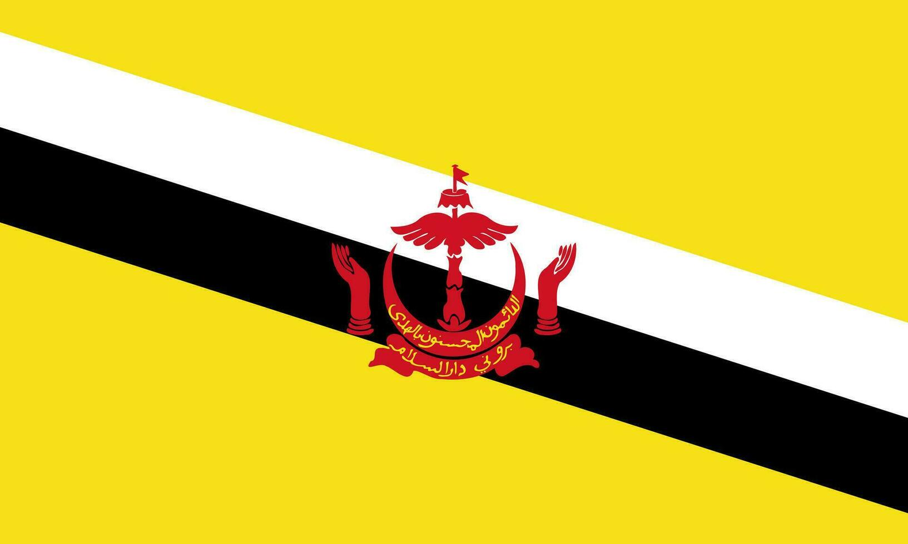
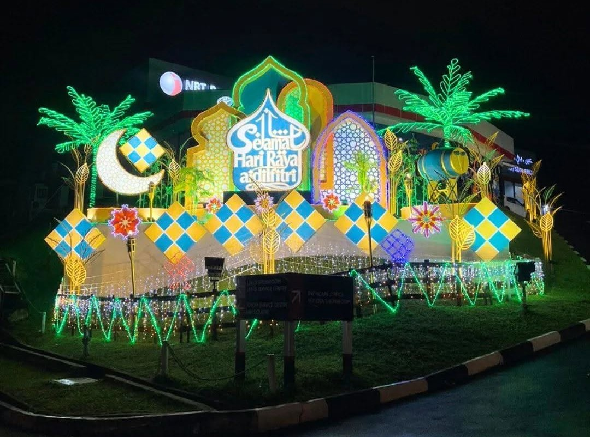
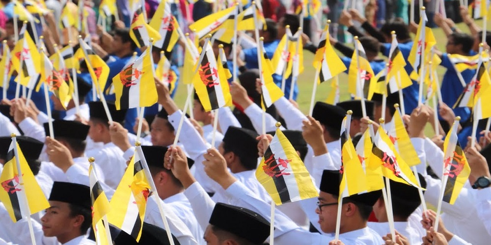
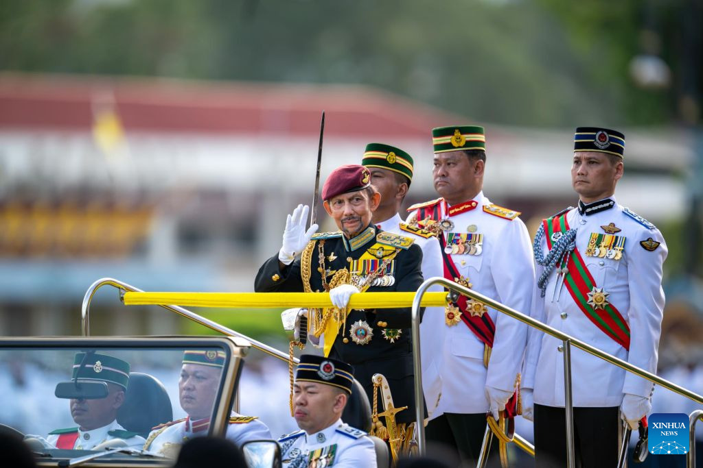

Get to know Brunei

Brunei, independent Islamic sultanate on the northern coast of the island of Borneo in Southeast Asia.
History of Brunei
Establishment of the Brunei Sultanate
Brunei emerged as a Malay sultanate. Awang Alak Betatar is traditionally regarded as its first ruler, later taking the name Sultan Muhammad Shah.
Centuries
Golden Age of Brunei
Brunei became a powerful regional maritime kingdom with influence across parts of Borneo and the surrounding islands.
Sarawak ceded to James Brooke
James Brooke became the ruler of Sarawak, beginning a period of territorial losses for Brunei.
British Protectorate
Brunei became a British protectorate, with Britain taking responsibility for its external affairs.
Discovery of Oil in Seria
Commercial oil was discovered in Seria, transforming Brunei's economy and future development.
Japanese Occupation
Brunei was occupied by Japanese forces during World War II.
Brunei's Independence
Brunei regained full independence on 1 January 1984 and became a fully sovereign nation.
Modern Development
Brunei continued developing its infrastructure, education, tourism and economy while preserving its cultural and Islamic heritage.
Festivals & Celebrations
Brunei has a rich cultural calendar with various festivals and celebrations throughout the year, reflecting its diverse heritage and Islamic traditions. A few significant ones include:

Hari Raya Aidilfitri
Celebrated at the end of Ramadhan, Hari Raya is a joyful occasion where families and friends gather, visit one another, share meals and celebrate together.

Brunei's National Day
On February 23rd, Brunei National Day commemorates the country's independence in 1984. The occasion is celebrated with grand ceremonies, parades and patriotic performances.

His Majesty's Birthday
On the 15th of July, Brunei celebrates the birthday of its beloved Sultan. The celebrations include royal ceremonies, public gathering and celebrations throughout the country.